| 日付 | 2014年2月1日（土） |
|---|---|
| メンバー | 家族（長女・2歳） |
| アクセス | 電車 |
妻が風邪気味のため娘と2人でお出かけすることにする。
行先は上野動物園。１年近く前にズーラシアに行ったことがあるが
その時は娘は動物にまったく無反応だった。
今なら動物に興味を示すかもしれないと思い、動物園を選択。
上野動物園は中学の修学旅行で行って以来の訪問だ。
上野駅で昼食用のサンドイッチを買ったら公園内を歩いていく。
しばらく歩くと上野動物園の入口が見えてくる。
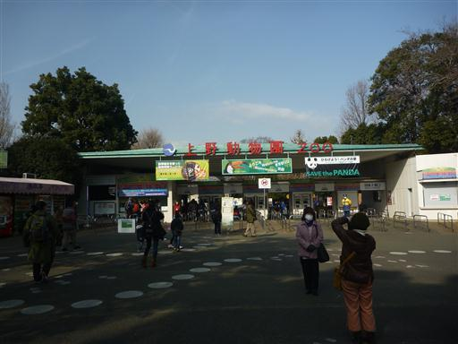
上野動物園と言えばパンダ。入ってすぐの場所にいる。
姿形よりも仕草が可愛い。
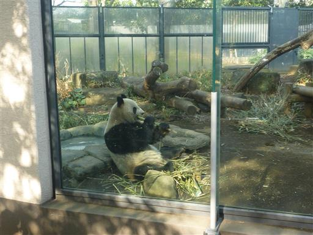
アシカ。思ったよりも大きい。
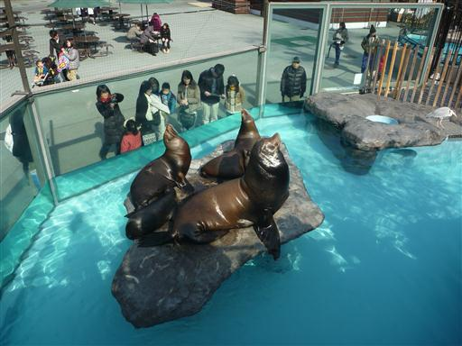
シロクマ。白というより完全に茶色だ。
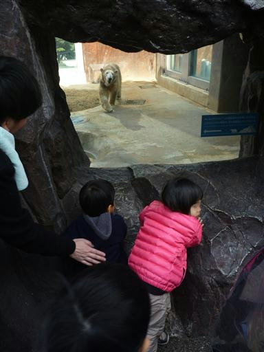
猿山。ニホンザルはそれほど珍しくはないのだが、他の動物よりも見ていて面白い。
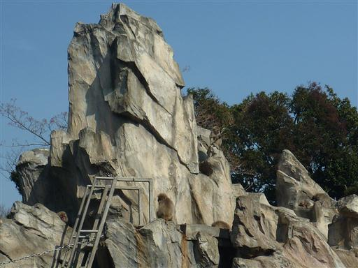
特に子ザルは可愛らしい。
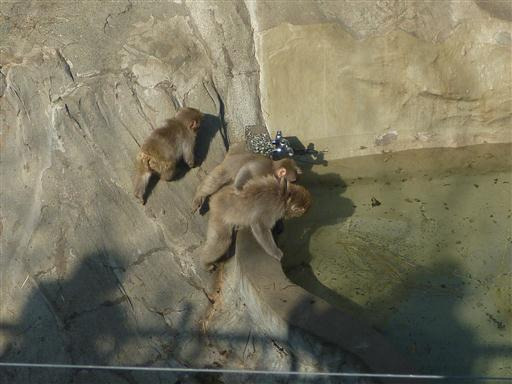
娘はサルと公園内をうろつくハトが気に入ったようだ。ハトを見つけては追いかけている。
お昼になったのでベンチに腰かけて、駅で買ったサンドイッチを食べる。
上野動物園は再入場ができないので外に食べに行けないのが難点だ。
敷地内にも飲食店はなくはないのだが、コスパと混雑を考えると割に合わない。
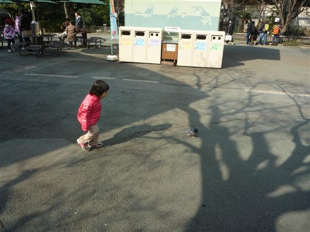
キリンのリュックを試着。
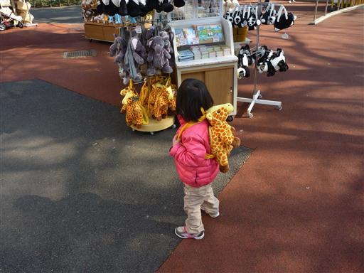
ゾウ。上野動物園は低い位置に棒や壁があって、背の低い子供には見にくい。
娘は「棒が邪魔」と言うので、そのたびに肩車で結構疲れる。
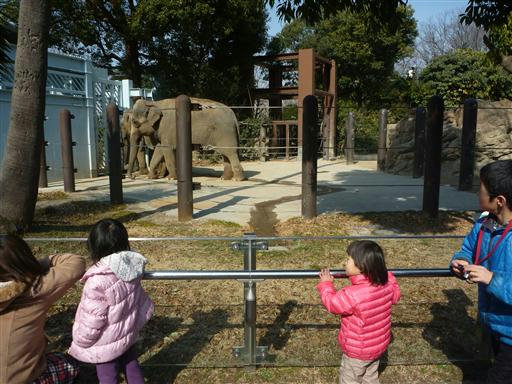
動物園は東と西に分かれていて、モノレールで結ばれている。

料金は2歳から必要なようだ。
上野動物園自体は小学生まで無料なのだが、この料金設定の差は何なのだろう？
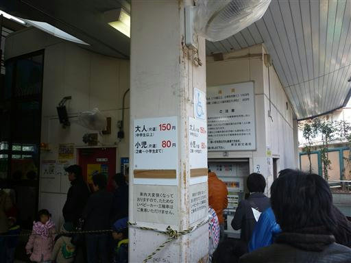
お昼を過ぎてモノレールは大混雑。この行列では歩いたほうが絶対に早い。
娘には「キリンを見に行こう」と言ってモノレールから注意をそらし、歩いて移動することにする。
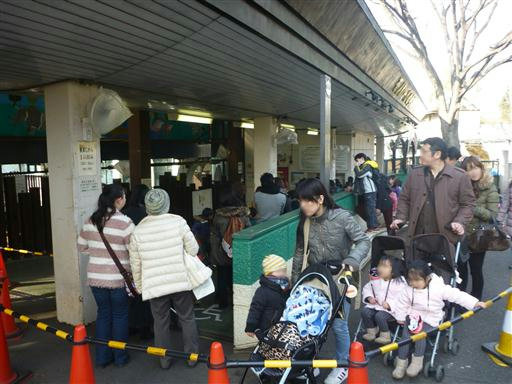
東西を結ぶ「いそっぷ橋」を渡る。
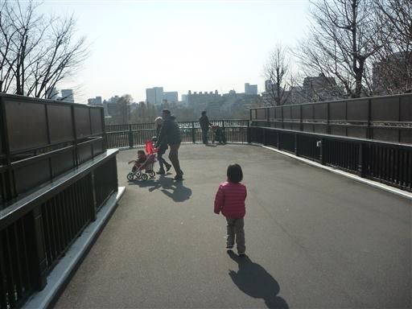
見上げるとモノレールが走っている。なかなか展望が良さそうなので、乗って見たかったのだが…
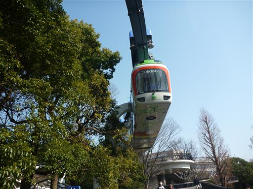
お目当てのキリン。近くで見ると大きい。
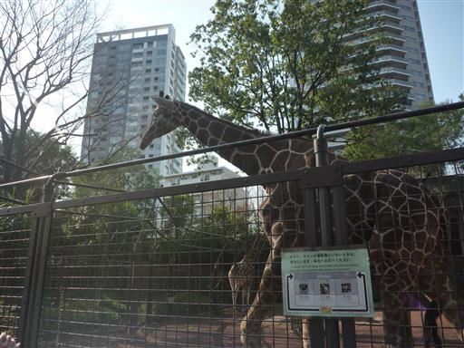
サイさんの敷地に首だけ侵入している。
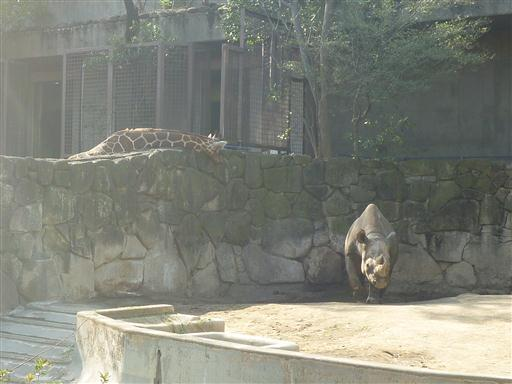
動物園からは近くにあるスカイツリーの頭が良く見える。
スカイツリーもいつかは行かなければならない。
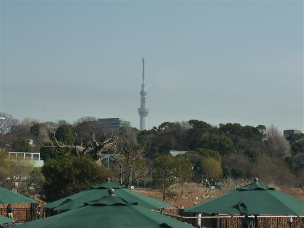
爬虫類館にいたイリエワニ。とんでもない大きさだ。
他にもカエル、ヘビ、カメ、オオサンショウウオなどがいる。
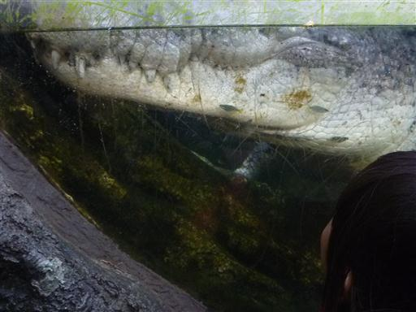
不忍池。天然の池らしい。ペリカンなどを見学できる。
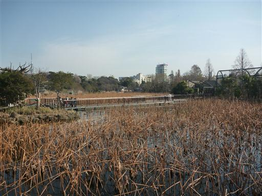
4時間ほどで動物園を一回りし、満足したので帰ることにする。
帰りに甘味処に寄って、おやつに団子を食べる。
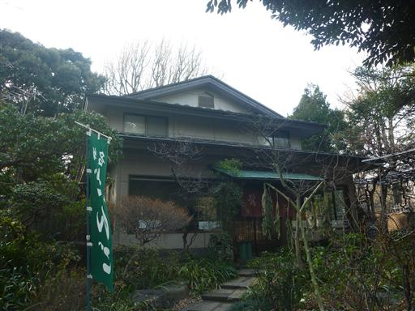
娘が目ざとく遊園地を発見。乗りたいとうるさいため1回だけ乗る。
コーヒーカップと同じようにぐるぐる回る。100円/人と比較的リーズナブルだ。
娘はもうすぐ3歳なだけあって、歩き続けてもぐずつくことはなく、お出かけがだいぶ楽になった。
疲れたのか、帰りは電車の中も乗り換えも爆睡だった。
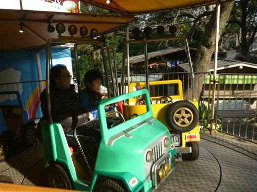